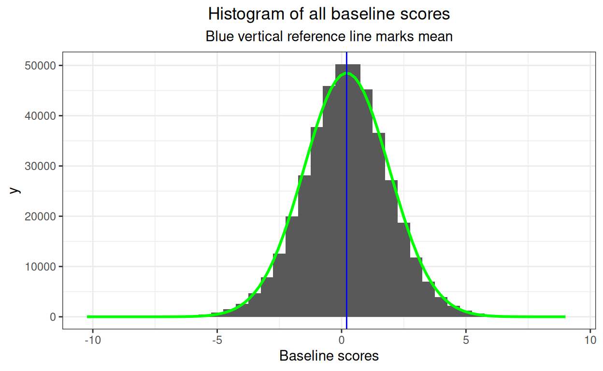
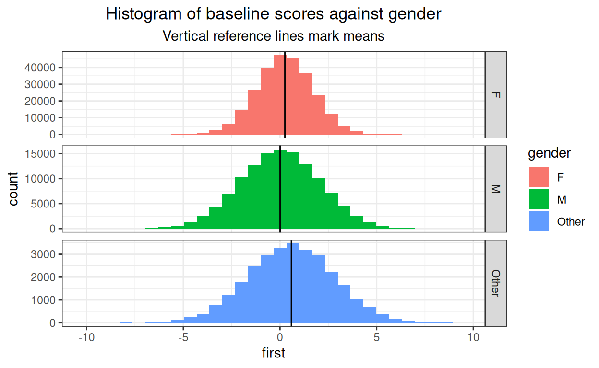
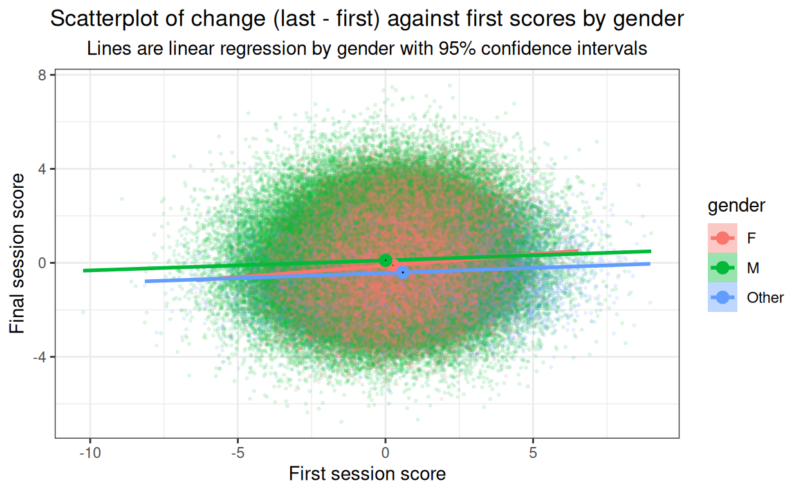
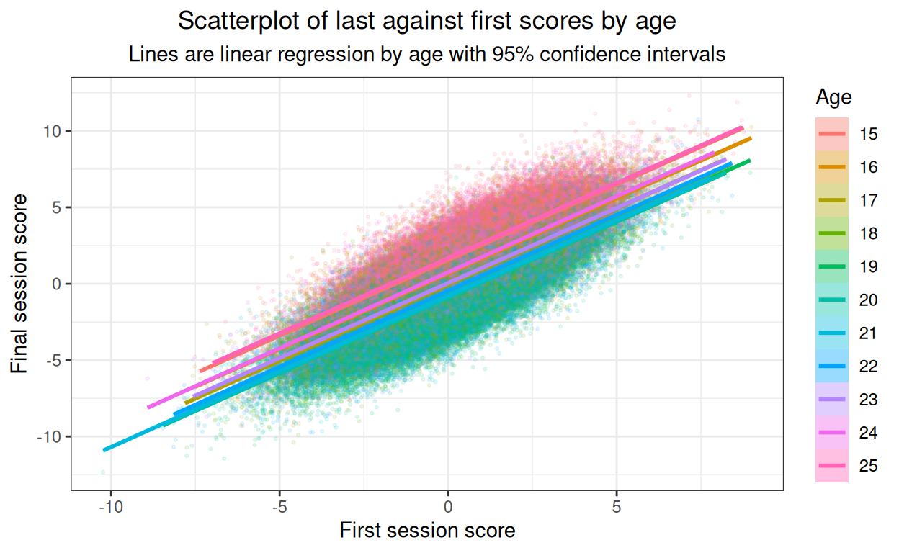
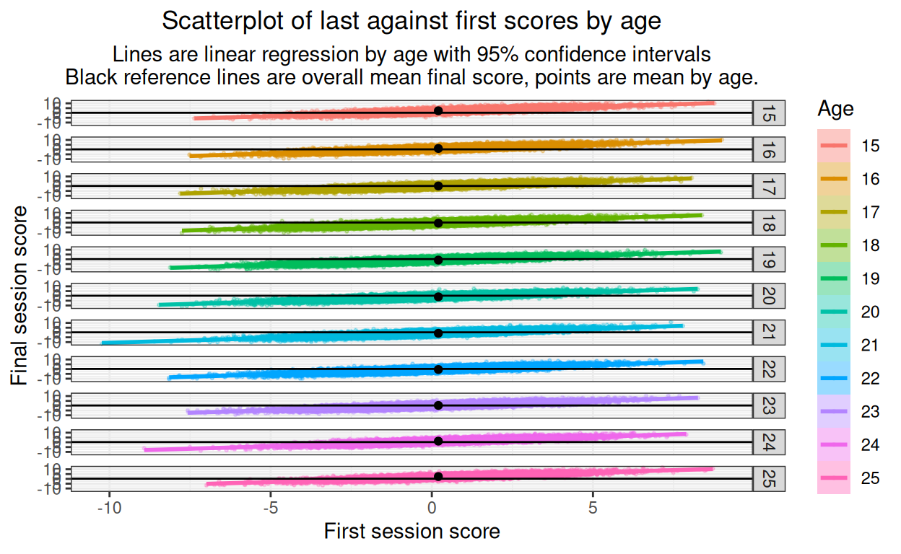
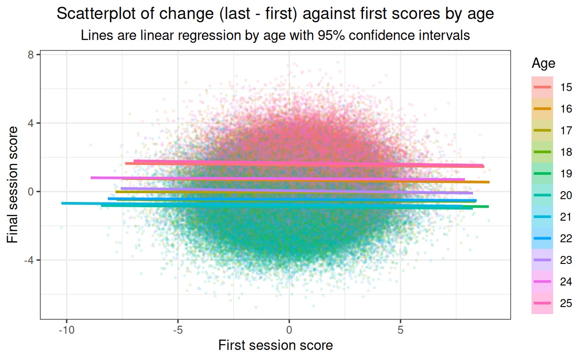
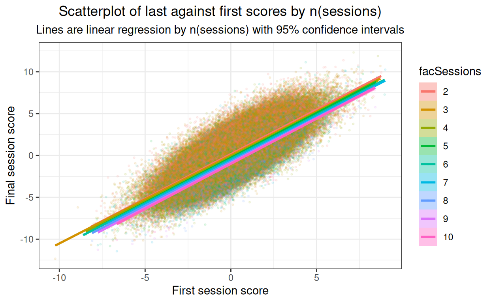

Started 5.ii.22, update 6.ii.22, still work in progress but worth mounting to illustrate some of the issues
I was being very slow talking with Emily (Dr. Blackshaw now) about some pre/post analyses she is doing so I realised I should take my ageing brain for some gentle walking pace exercise!
Her dataset is fairly large and has first and last session CORE scores (CORE-10 or YP-CORE, analysing each dataset separately). She has been asked to look at the impacts on change of the numbers of sessions attended, gender and age.
This code block generates the baseline scores. I’m using Gaussian distributions which is just one of the many unrealistic aspects of this. However, I’m really doing this to explore different ways of displaying the effects and not aspiring to verisimilitude!
Show code
### these vectors create population proportions from which to sample with sample()
vecSessions <- c(rep(2, 40), # I have made these up, I have no idea how realistic they are
rep(3, 30),
rep(4, 20),
rep(3, 15),
rep(4, 10),
rep(5, 8),
rep(6, 7),
rep(7, 5),
rep(8, 3),
rep(9, 2),
rep(10, 1))
vecAge <- c(rep(15, 20), # ditto
rep(16, 25),
rep(17, 25),
rep(18, 30),
rep(19, 35),
rep(20, 30),
rep(21, 30),
rep(22, 33),
rep(23, 29),
rep(24, 20),
rep(25, 18))
vecGender <- c(rep("F", 63), # ditto
rep("M", 30),
rep("Other", 7))
nGenders <- 3
nAges <- length(15:25) # lazy but does make tweaking the model later easier!
nSessLengths <- length(2:20) # ditto
nCells <- nGenders * nAges * nSessLengths
avCellSize <- 20 # trying to make things big enough
populnSize <- nCells * avCellSize
### build scores from a Gaussian base variable
latentMean <- 0
latentSD <- 1
### add baseline differences
### gender has female as reference vale
effBaseFemaleMean <- 0
effBaseFemaleSD <- 1
effBaseMaleMean <- -.25
effBaseMaleSD <- 1.8
effBaseOtherMean <- .35
effBaseOtherSD <- 2
### model age as a quadratic
minAge <- min(vecAge)
midAge <- mean(vecAge)
effBaseAgeMeanMult <- .03
effBaseAgeSD <- 1
### now create model for change effects
### start with noise to add to baseline score
changeFuzzMean <- .1
changeFuzzSD <- .2
### now gender effects on change
effChangeFemaleMean <- -.8
effChangeFemaleSD <- 1
effChangeMaleMean <- effChangeFemaleMean + .2 # smaller improvement for men
effChangeMaleSD <- 1.5 # more variance in male change
effChangeOtherMean <- effChangeFemaleMean - .3 # better for "other"
effChangeOtherSD <- 1
### model age as a quadratic again
effChangeAgeMeanMult <- .1
effChangeAgeMeanSD <- 1
### model effect of number of sessions as linear
minSessions = min(vecSessions)
effChangeSessionsMult <- -.15
effChangeSessionsSD <- 1
### build the sample
set.seed(12345) # reproducible sample
as_tibble(list(ID = 1:populnSize,
gender = sample(vecGender, populnSize, replace = TRUE),
age = sample(vecAge, populnSize, replace = TRUE),
nSessions = sample(vecSessions, populnSize, replace = TRUE),
### now build baseline scores
baseLatent = rnorm(populnSize, mean = latentMean, sd = latentSD))) -> tibSimulnVars
tibSimulnVars %>%
### start by adding effect of gender to the that latent
mutate(first = case_when(gender == "F" ~ baseLatent + rnorm(populnSize, mean = effBaseFemaleMean, sd = effBaseFemaleSD),
gender == "M" ~ baseLatent + rnorm(populnSize, mean = effBaseMaleMean, sd = effBaseMaleSD),
gender == "Other" ~ baseLatent + rnorm(populnSize, mean = effBaseOtherMean, sd = effBaseOtherSD)),
Age = factor(age),
facSessions = factor(nSessions)) %>%
rowwise() %>%
### add effect of age
### I am, a bit unrealistically, assuming that number of sessions doesn't affect baseline score (nor v.v.)
mutate(first = first + effBaseAgeMeanMult * rnorm(1,
mean = (age - midAge)^2,
sd = effBaseAgeSD)) %>%
ungroup() -> tibBaselineScores
And this adds final scores (and hence change scores, probably more logical to have done it the other way around).
Show code
tibBaselineScores %>%
### create last scores first by adding noise to the baseline scores
mutate(last = first + rnorm(populnSize,
mean = changeFuzzMean,
sd = changeFuzzSD)) %>%
### now add effect of gender on change
mutate(last = case_when(gender == "F" ~ last + rnorm(populnSize,
mean = effChangeFemaleMean,
sd = effChangeFemaleSD),
gender == "M" ~ last + rnorm(populnSize,
mean = effChangeMaleMean,
sd = effChangeMaleSD),
gender == "Other" ~ last + rnorm(populnSize,
mean = effChangeOtherMean,
sd = effChangeOtherSD))) %>%
rowwise() %>%
### add effect of age
mutate(last = last + effChangeAgeMeanMult * rnorm(1,
mean = (age - midAge)^2,
sd = effChangeAgeMeanSD),
### add effect of number of sessions
last = last + effChangeSessionsMult * rnorm(1,
mean = nSessions - minSessions,
sd = effChangeSessionsSD),
change = last - first) %>%
ungroup() -> tibDat
I’ve simulated a very unrealistic dataset of total size 12540 with a three way gender classification and age ranging from 15 to 25 and numbers of sessions from 2 to 10.
Breakdown
Gender
Show code

OK.
Age
Show code
ggplot(data = tibDat,
aes(x = age, fill = gender))+
geom_histogram(stat = "count") +
scale_x_continuous(breaks = vecAge, labels = as.character(vecAge))

I haven’t created any systematic association between age and gender.
Numbers of sessions
Show code
ggplot(data = tibDat,
aes(x = nSessions, fill = gender))+
geom_histogram(stat = "count") +
scale_x_continuous(breaks = vecSessions, labels = as.character(vecSessions))
I haven’t created any systematic association between number of sessions and gender, nor with age.
Check that I’ve created roughly the baseline scores I wanted
Check distributions of scores
This is a bit silly here as we know I’ve created samples from Gaussian distributions, however with real world data really marked deviations from Gaussian distributions would clarify that caution would be needed for any tests or confidence intervals when we look at effects on change. Start with “first”, i.e. baseline score.
Show code
ggplot(data = tibDat,
aes(x = first)) +
geom_histogram() +
ggtitle("Histogram of all baseline scores")

I could get fancy and add the best Gaussian distribution fit but clearly no major problem there. But what about effects of predictors?
Show code
tibDat %>%
group_by(gender) %>%
summarise(mean = mean(first)) -> tmpTibMeans
ggplot(data = tibDat,
aes(x = first, fill = gender)) +
facet_grid(rows = vars(gender),
scales = "free_y") +
geom_histogram() +
geom_vline(data = tmpTibMeans,
aes(xintercept = mean)) +
ggtitle("Histogram of baseline scores against gender",
subtitle = "Vertical reference lines mark means")

Can see the relationship between mean baseline score and gender. Y axis free as numbers in each gender category vary quite a bit.
Show code
tibDat %>%
group_by(Age) %>%
summarise(mean = mean(first)) -> tmpTibMeans
ggplot(data = tibDat,
aes(x = first, fill = Age)) +
facet_grid(rows = vars(Age),
scales = "free_y") +
geom_histogram() +
geom_vline(data = tmpTibMeans,
aes(xintercept = mean)) +
ggtitle("Histogram of baseline scores against age",
subtitle = "Vertical reference lines mark means")

Fine! And just to pander to obsessionality.
Show code
tibDat %>%
group_by(Age, gender) %>%
summarise(mean = mean(first)) -> tmpTibMeans
ggplot(data = tibDat,
aes(x = first, fill = Age)) +
facet_grid(rows = vars(Age),
cols = vars(gender),
scales = "free") +
geom_histogram() +
geom_vline(data = tmpTibMeans,
aes(xintercept = mean)) +
ggtitle("Histogram of baseline scores against age",
subtitle = "Vertical reference lines mark means")

That’s just silly!
Show code
tibDat %>%
group_by(nSessions) %>%
summarise(mean = mean(first)) -> tmpTibMeans
ggplot(data = tibDat,
aes(x = first, fill = nSessions)) +
facet_grid(rows = vars(nSessions),
scales = "free") +
geom_histogram() +
geom_vline(data = tmpTibMeans,
aes(xintercept = mean)) +
ggtitle("Histogram of baseline scores against number of sessions",
subtitle = "Vertical reference lines mark means")

OK. Now same for final scores.
Show code
ggplot(data = tibDat,
aes(x = first)) +
geom_histogram() +
ggtitle("Histogram of all final scores")
OK
Show code
tibDat %>%
group_by(gender) %>%
summarise(mean = mean(first)) -> tmpTibMeans
ggplot(data = tibDat,
aes(x = first, fill = gender)) +
facet_grid(rows = vars(gender),
scales = "free_y") +
geom_histogram() +
geom_vline(data = tmpTibMeans,
aes(xintercept = mean)) +
ggtitle("Histogram of final scores against gender",
subtitle = "Vertical reference lines mark means")
OK again.
Show code
tibDat %>%
group_by(Age) %>%
summarise(mean = mean(first)) -> tmpTibMeans
ggplot(data = tibDat,
aes(x = first, fill = Age)) +
facet_grid(rows = vars(Age),
scales = "free_y") +
geom_histogram() +
geom_vline(data = tmpTibMeans,
aes(xintercept = mean)) +
ggtitle("Histogram of final scores against age",
subtitle = "Vertical reference lines mark means")
And again.
Show code
tibDat %>%
group_by(Age, gender) %>%
summarise(mean = mean(first)) -> tmpTibMeans
ggplot(data = tibDat,
aes(x = first, fill = Age)) +
facet_grid(rows = vars(Age),
cols = vars(gender),
scales = "free") +
geom_histogram() +
geom_vline(data = tmpTibMeans,
aes(xintercept = mean)) +
ggtitle("Histogram of final scores against age",
subtitle = "Vertical reference lines mark means")
Still silly!
Show code
tibDat %>%
group_by(nSessions) %>%
summarise(mean = mean(first)) -> tmpTibMeans
ggplot(data = tibDat,
aes(x = first, fill = nSessions)) +
facet_grid(rows = vars(nSessions),
scales = "free") +
geom_histogram() +
geom_vline(data = tmpTibMeans,
aes(xintercept = mean)) +
ggtitle("Histogram of final scores against number of sessions",
subtitle = "Vertical reference lines mark means")
Getting lumpy where the cell sizes are getting small of course but fine.
Gender
Show code
### get means and bootstrap CIs for baseline gender effect
set.seed(12345) # reproducible bootstrap
suppressWarnings(tibBaselineScores %>%
group_by(gender) %>%
summarise(mean = mean(first),
CI = list(getBootCImean(first,
nGT10kerr = FALSE,
verbose = FALSE))) %>%
unnest_wider(CI) -> tmpTibMeans)
ggplot(data = tibBaselineScores,
aes(x = gender, y = first)) +
geom_violin(aes(fill = gender)) +
geom_hline(yintercept = mean(tibBaselineScores$first)) +
geom_point(data = tmpTibMeans,
aes(y = mean)) +
geom_linerange(data = tmpTibMeans,
inherit.aes = FALSE,
aes(x = gender,
ymin = LCLmean,
ymax = UCLmean)) +
ylab("Baseline score") +
xlab("Gender") +
ggtitle("Violin plot to check baseline gender differences",
subtitle = "points are means, tiny vertical lines are 95% bootstrap CI of means")
OK. It’s not very visible but there is a small baseline gender effect and the confidence intervals are so tight that they are just about invisible.
Age
Show code
### get means and bootstrap CIs for baseline age effect
set.seed(12345) # reproducible bootstrap
suppressWarnings(tibBaselineScores %>%
group_by(Age) %>%
summarise(mean = mean(first),
CI = list(getBootCImean(first,
nGT10kerr = FALSE,
verbose = FALSE))) %>%
unnest_wider(CI) -> tmpTibMeans)
ggplot(data = tibBaselineScores,
aes(x = Age, y = first)) +
geom_violin(aes(fill = Age)) +
geom_hline(yintercept = mean(tibBaselineScores$first)) +
geom_point(data = tmpTibMeans,
aes(y = mean)) +
geom_linerange(data = tmpTibMeans,
inherit.aes = FALSE,
aes(x = Age,
ymin = LCLmean,
ymax = UCLmean)) +
ylab("Baseline score") +
xlab("Age") +
ggtitle("Violin plot to check baseline gender differences",
subtitle = "points are means, tiny vertical lines are 95% bootstrap CI of means")

Small and very unrealistic quadratic (U shaped) effect of age on baseline scores.
Check on change scores I’ve created
Show code
tibDat %>%
group_by(gender) %>%
summarise(meanFirst = mean(first),
meanLast = mean(last),
CIfirst = list(getBootCImean(first)),
CIlast = list(getBootCImean(last))) %>%
unnest_wider(CIfirst) %>%
### got to rename to avoid name collision
rename(obsmeanFirst = obsmean,
LCLmeanFirst = LCLmean,
UCLmeanFirst = UCLmean) %>%
unnest_wider(CIlast) %>%
### renaming now is just for clarity rather than necessity
rename(obsmeanLast = obsmean,
LCLmeanLast = LCLmean,
UCLmeanLast = UCLmean) -> tmpTibMeans
ggplot(data = tibDat,
aes(x = first, y = last, colour = gender, fill = gender)) +
geom_point(alpha = .1, size = .5) +
geom_smooth(method = "lm") +
# geom_point(data = tmpTibMeans,
# aes(x = meanFirst, y = meanLast),
# size = 3) +
geom_linerange(data = tmpTibMeans,
inherit.aes = FALSE,
aes(x = meanFirst,
ymin = LCLmeanLast,
ymax = UCLmeanLast)) +
geom_linerange(data = tmpTibMeans,
inherit.aes = FALSE,
aes(y = meanLast,
xmin = LCLmeanFirst,
xmax = UCLmeanFirst)) +
xlab("First session score") +
ylab("Final session score") +
ggtitle("Scatterplot of last against first scores by gender",
subtitle = "Lines are linear regression by gender with 95% confidence intervals\nCrosshairs are 95% confidence intervals of means")

Not a very informative plot here but it would be important with real data to plot something like this to see whether there are markedly non-linear relationships. Here it’s just about visible that I’ve created slight differences in slope of final session score on first session score by gender. I’ve put in the means (of first and last scores) by gender which helps remind us of the horizontal shift of the baseline score gender differences seen above. (Cross hairs in black as the ones for the men and for the women disappear if coloured by gender.)
Show code
ggplot(data = tibDat,
aes(x = first, y = last, colour = gender, fill = gender)) +
facet_grid(rows = vars(gender)) +
geom_point(alpha = .1, size = .5) +
geom_smooth(method = "lm") +
# geom_point(data = tmpTibMeans,
# aes(x = meanFirst, y = meanLast),
# size = 3) +
geom_linerange(data = tmpTibMeans,
inherit.aes = FALSE,
aes(x = meanFirst,
ymin = LCLmeanLast,
ymax = UCLmeanLast)) +
geom_linerange(data = tmpTibMeans,
inherit.aes = FALSE,
aes(y = meanLast,
xmin = LCLmeanFirst,
xmax = UCLmeanFirst)) +
xlab("First session score") +
ylab("Final session score") +
ggtitle("Scatterplot of last against first scores by gender",
subtitle = "Lines are linear regression by gender with 95% confidence intervals\nCrosshairs are 95% confidence intervals of means")

As the main objective here is to look for major problems with the relationship between x and y variables, best to complement that with the same but facetted by gender.
OK, no issues of non-linearities there (of course they’re not, I didn’t model them so!)
What about change scores themselves?
Plotting final scores against baseline is vital to look for non-linearities in the relationship but we are as interested in change as final scores. (Actually, we’re interested in both and of course they’re mathematically completely linearly related but the give usefully different views on this whole issue of final score and change.)
So plot change against first score now we have seen that the relationships between first and last scores are not markedly non-linear.
Show code
tibDat %>%
group_by(gender) %>%
summarise(meanFirst = mean(first),
meanChange = mean(change),
CIfirst = list(getBootCImean(first)),
CIchange = list(getBootCImean(change))) %>%
unnest_wider(CIfirst) %>%
### got to rename to avoid name collision
rename(obsmeanFirst = obsmean,
LCLmeanFirst = LCLmean,
UCLmeanFirst = UCLmean) %>%
unnest_wider(CIchange) %>%
### renaming now is just for clarity rather than necessity
rename(obsmeanChange = obsmean,
LCLmeanChange = LCLmean,
UCLmeanChange = UCLmean) -> tmpTibMeans
ggplot(data = tibDat,
aes(x = first, y = change, colour = gender, fill = gender)) +
geom_point(alpha = .1, size = .5) +
geom_smooth(method = "lm") +
geom_point(data = tmpTibMeans,
aes(x = meanFirst, y = meanChange),
size = 3) +
geom_linerange(data = tmpTibMeans,
inherit.aes = FALSE,
aes(x = meanFirst,
ymin = LCLmeanChange,
ymax = UCLmeanChange)) +
geom_linerange(data = tmpTibMeans,
inherit.aes = FALSE,
aes(y = meanChange,
xmin = LCLmeanFirst,
xmax = UCLmeanFirst)) +
xlab("First session score") +
ylab("Final session score") +
ggtitle("Scatterplot of change (last - first) against first scores by gender",
subtitle = "Lines are linear regression by gender with 95% confidence intervals")

Now the mean points show clearly both the horizontal shifts of baseline score gender differences, but also that the change scores are different. The CIs for the female subset are so tiny they disappear but it’s clear that the differences are systematic for the change scores as well as for the baseline scores. Very slight but clear linear relationship between baseline score and change, in real life datasets I’d expect more of a relationship and that’d be an important reason for doing this plot.
Age
Show code
ggplot(data = tibDat,
aes(x = first, y = last, colour = Age, fill = Age)) +
geom_point(alpha = .1, size = .5) +
geom_smooth(method = "lm") +
xlab("First session score") +
ylab("Final session score") +
ggtitle("Scatterplot of last against first scores by age",
subtitle = "Lines are linear regression by age with 95% confidence intervals")

Strong relationships and no obvious non-linearities but not an easy plot to read. Facetted plot better.
Show code
tibDat %>%
mutate(xmean = mean(first)) %>% # centre on x axis
group_by(Age) %>%
summarise(xmean = first(xmean), # to retain that constant
last = mean(last)) -> tmpTibMeans
ggplot(data = tibDat,
aes(x = first, y = last, colour = Age, fill = Age)) +
facet_grid(rows = vars(Age)) +
geom_point(alpha = .3, size = .5) +
geom_smooth(method = "lm") +
geom_hline(yintercept = mean(tibDat$first)) +
geom_point(data = tmpTibMeans,
inherit.aes = FALSE,
aes(x = xmean, y = last)) +
xlab("First session score") +
ylab("Final session score") +
ggtitle("Scatterplot of last against first scores by age",
subtitle = "Lines are linear regression by age with 95% confidence intervals\nBlack reference lines are overall mean final score, points are mean by age.")

Main thing here is that there are no obvious nonlinearities. I have added the overall mean as a horizontal reference and the facet (age) mean as a point so we can still see that the final score mean is related to age.
Now change scores.
Show code
ggplot(data = tibDat,
aes(x = first, y = change, colour = Age, fill = Age)) +
geom_point(alpha = .1, size = .5) +
geom_smooth(method = "lm") +
xlab("First session score") +
ylab("Final session score") +
ggtitle("Scatterplot of change (last - first) against first scores by age",
subtitle = "Lines are linear regression by age with 95% confidence intervals")

@@@ put facetted plot here later, when I have time! @@@
Show code
ggplot(data = tibDat,
aes(x = first, y = last, colour = facSessions, fill = facSessions)) +
geom_point(alpha = .1, size = .5) +
geom_smooth(method = "lm") +
xlab("First session score") +
ylab("Final session score") +
ggtitle("Scatterplot of last against first scores by n(sessions)",
subtitle = "Lines are linear regression by n(sessions) with 95% confidence intervals")

@@@ put facetted plot here later, when I have time! @@@
Show code
ggplot(data = tibDat,
aes(x = first, y = change, colour = facSessions, fill = facSessions)) +
geom_point(alpha = .1, size = .5) +
geom_smooth(method = "lm") +
xlab("First session score") +
ylab("Final session score") +
ggtitle("Scatterplot of change (last - first) against first scores by n(sessions)",
subtitle = "Lines are linear regression by n(sessions) with 95% confidence intervals")

@@@ put facetted plot here later, when I have time! @@@
Show code
### get means and bootstrap CIs for effect of n(sessions) on last score
set.seed(12345) # reproducible bootstrap
suppressWarnings(tibDat %>%
group_by(nSessions) %>%
summarise(mean = mean(change),
CI = list(getBootCImean(change,
nGT10kerr = FALSE,
verbose = FALSE))) %>%
unnest_wider(CI) -> tmpTibMeans)
ggplot(data = tibDat,
aes(x = nSessions, y = change, colour = facSessions, fill = facSessions)) +
geom_violin(scale = "count") +
geom_point(data = tmpTibMeans,
inherit.aes = FALSE,
aes(x = nSessions, y = mean)) +
geom_linerange(data = tmpTibMeans,
inherit.aes = FALSE,
aes(x = nSessions, ymin = LCLmean, ymax = UCLmean),
size = 1) +
geom_smooth(inherit.aes = FALSE,
aes(x = nSessions, y = change),
method = "lm",
colour = "black") +
xlab("Number of sessions") +
ylab("Score change") +
ggtitle("Violin plot of change (last - first) against first scores by n(sessions)",
subtitle = "Line is linear regression with 95% confidence interval\nPoints are means with vertical lines for their bootstrap 95% confidence intervals")

Show code
ggsave("prepost1.png")
What about linear decomposition of effects?
Start with linear regression of final score on baseline score with all predictors and interactions. Age as factor.
Show code
Call:
lm(formula = last ~ first + gender + Age + nSessions + gender *
Age + gender * nSessions + gender * Age + Age * nSessions +
gender * Age * nSessions, data = tibDat)
Residuals:
Min 1Q Median 3Q Max
-5.2605 -0.7808 -0.0003 0.7838 6.6349
Coefficients:
Estimate Std. Error t value Pr(>|t|)
(Intercept) 1.884419 0.118440 15.910 < 2e-16 ***
first 0.994648 0.006378 155.954 < 2e-16 ***
genderM 0.500812 0.208824 2.398 0.01649 *
genderOther -0.089009 0.345457 -0.258 0.79668
Age16 -0.770181 0.158315 -4.865 1.16e-06 ***
Age17 -1.309495 0.161281 -8.119 5.13e-16 ***
Age18 -1.867340 0.157332 -11.869 < 2e-16 ***
Age19 -2.158527 0.150012 -14.389 < 2e-16 ***
Age20 -2.172953 0.155112 -14.009 < 2e-16 ***
Age21 -2.053221 0.154786 -13.265 < 2e-16 ***
Age22 -1.798390 0.156045 -11.525 < 2e-16 ***
Age23 -1.355337 0.154544 -8.770 < 2e-16 ***
Age24 -0.559720 0.170420 -3.284 0.00102 **
Age25 0.212141 0.168815 1.257 0.20891
nSessions -0.099343 0.030510 -3.256 0.00113 **
genderM:Age16 -0.007527 0.283242 -0.027 0.97880
genderOther:Age16 0.137570 0.493210 0.279 0.78031
genderM:Age17 -0.241464 0.291804 -0.827 0.40798
genderOther:Age17 0.006702 0.500243 0.013 0.98931
genderM:Age18 -0.297632 0.276356 -1.077 0.28151
genderOther:Age18 -0.193386 0.503589 -0.384 0.70097
genderM:Age19 -0.173321 0.261959 -0.662 0.50822
genderOther:Age19 -0.640372 0.451368 -1.419 0.15600
genderM:Age20 -0.591214 0.269367 -2.195 0.02819 *
genderOther:Age20 -0.584845 0.478810 -1.221 0.22194
genderM:Age21 -0.763339 0.269786 -2.829 0.00467 **
genderOther:Age21 -0.416606 0.457866 -0.910 0.36290
genderM:Age22 -0.278474 0.267495 -1.041 0.29788
genderOther:Age22 -0.881478 0.486451 -1.812 0.07000 .
genderM:Age23 -0.046390 0.275611 -0.168 0.86634
genderOther:Age23 -0.216113 0.460486 -0.469 0.63885
genderM:Age24 -0.660295 0.300616 -2.196 0.02808 *
genderOther:Age24 -0.227848 0.504110 -0.452 0.65129
genderM:Age25 -0.200045 0.302098 -0.662 0.50787
genderOther:Age25 -0.570619 0.512159 -1.114 0.26524
genderM:nSessions -0.114479 0.051853 -2.208 0.02728 *
genderOther:nSessions -0.051991 0.083095 -0.626 0.53154
Age16:nSessions -0.050957 0.040349 -1.263 0.20665
Age17:nSessions -0.092861 0.040955 -2.267 0.02338 *
Age18:nSessions -0.042416 0.040505 -1.047 0.29504
Age19:nSessions -0.052642 0.038210 -1.378 0.16832
Age20:nSessions -0.092577 0.039192 -2.362 0.01819 *
Age21:nSessions -0.077144 0.039612 -1.947 0.05150 .
Age22:nSessions -0.064048 0.039734 -1.612 0.10700
Age23:nSessions -0.048669 0.039351 -1.237 0.21619
Age24:nSessions -0.074396 0.043129 -1.725 0.08456 .
Age25:nSessions -0.050839 0.042969 -1.183 0.23677
genderM:Age16:nSessions 0.051402 0.070922 0.725 0.46861
genderOther:Age16:nSessions -0.017382 0.120210 -0.145 0.88503
genderM:Age17:nSessions 0.083110 0.074478 1.116 0.26449
genderOther:Age17:nSessions 0.032787 0.120044 0.273 0.78476
genderM:Age18:nSessions 0.111395 0.069310 1.607 0.10804
genderOther:Age18:nSessions 0.024148 0.128096 0.189 0.85048
genderM:Age19:nSessions 0.080484 0.065474 1.229 0.21900
genderOther:Age19:nSessions 0.172839 0.112528 1.536 0.12457
genderM:Age20:nSessions 0.184396 0.066988 2.753 0.00592 **
genderOther:Age20:nSessions 0.164899 0.116935 1.410 0.15851
genderM:Age21:nSessions 0.252983 0.066990 3.776 0.00016 ***
genderOther:Age21:nSessions 0.078446 0.113209 0.693 0.48837
genderM:Age22:nSessions 0.134330 0.066604 2.017 0.04373 *
genderOther:Age22:nSessions 0.207922 0.126780 1.640 0.10103
genderM:Age23:nSessions 0.047702 0.068413 0.697 0.48565
genderOther:Age23:nSessions 0.026580 0.115313 0.231 0.81770
genderM:Age24:nSessions 0.203496 0.075480 2.696 0.00703 **
genderOther:Age24:nSessions 0.057344 0.119929 0.478 0.63255
genderM:Age25:nSessions 0.126469 0.074165 1.705 0.08818 .
genderOther:Age25:nSessions 0.112369 0.123228 0.912 0.36185
---
Signif. codes: 0 '***' 0.001 '**' 0.01 '*' 0.05 '.' 0.1 ' ' 1
Residual standard error: 1.204 on 12473 degrees of freedom
Multiple R-squared: 0.7347, Adjusted R-squared: 0.7333
F-statistic: 523.2 on 66 and 12473 DF, p-value: < 2.2e-16Show code
# lisLMFull$coefficients %>%
# as_tibble() %>% # that ignores the names so ...
# mutate(effect = names(lisLMFull$coefficients)) %>% # get them!
# select(effect, value) %>% # more sensible order
# rename(coefficient = value )
### hm, that's done for me in broom
broom::tidy(lisLMFull) %>%
### identify the order of the terms, i.e. two-way interaction has order 2 etc.
mutate(order = 1 + str_count(term, fixed(":")),
sig = if_else(p.value < .05, 1, 0)) -> tibLMFull
valNinteractions <- sum(tibLMFull$order > 1)
That’s not very digestible but it is, arguably, a sensible place to start. We can ignore the intercept really but it’s not zero!
More usefully, we have a very strong effect of initial score on final score, a statistically significant effect of male gender against the reference gender (female) and no statistically significant effect of gender “other” in this saturated model. The reference category for age is the lowest, age 15 and all the other ages show a statistically significantly different final score from that for age 15 except age 25. Finally, in the simple effects, we have a statistically significant effect of number of sessions on final score with coefficient estimate -0.099, i.e. a drop of about that in mean final score for every one more session attended. (Remember the final scores here distribute between -9.04 and 9.54 with SD 2.33 so I appear to have modelled in a pretty small effect of nSessions.
The complication is all those statistically significant interactions in this saturated model. We have 67 terms, including the intercept, 14 simple effects (ignoring the intercept) and 52 interactions, 32 two-way interactions and 20 three-way interactions. Here’s the breakdown of the numbers significant.
Show code
| order | n | nSignif | propn |
|---|---|---|---|
| 1 | 15 | 13 | 0.867 |
| 2 | 32 | 6 | 0.188 |
| 3 | 20 | 4 | 0.2 |
With 52 the probability that none of them would come out statistically significant at p < .05 given a true null population model would be .95^52, i.e. 0.069, pretty unlikely but the challenge is to know what to do about this. If we could treat age as linear we wouldn’t have all those effects for each age other than 15 and things would be much simpler, but we know I’ve modelled age as having a quadratic effect.
Cheat a bit and just fit the quadratic for age by centring and then squaring age.
Show code
# lm(last ~ first + gender + poly(Age, 2) + nSessions +
# gender * poly(Age, 2) + gender * nSessions + gender * poly(Age, 2) + poly(Age, 2) * nSessions +
# gender * poly(Age, 2) * nSessions,
# data = tibDat) -> lisLMAge2
centreVec <- function(x){
x - mean(x)
}
tibDat %>%
mutate(ageSquared = centreVec(age),
ageSquared = ageSquared^2,
### recentre to get mean zero
ageSquared = centreVec(ageSquared)) -> tibDat
lm(last ~ first + gender + ageSquared + nSessions +
gender * ageSquared + gender * nSessions + gender * ageSquared + ageSquared * nSessions +
gender * ageSquared * nSessions,
data = tibDat) -> lisLMAge2
summary(lisLMAge2)
Call:
lm(formula = last ~ first + gender + ageSquared + nSessions +
gender * ageSquared + gender * nSessions + gender * ageSquared +
ageSquared * nSessions + gender * ageSquared * nSessions,
data = tibDat)
Residuals:
Min 1Q Median 3Q Max
-5.2218 -0.7851 0.0042 0.7866 6.6092
Coefficients:
Estimate Std. Error t value
(Intercept) 0.487414 0.031854 15.302
first 0.993944 0.006364 156.183
genderM 0.185764 0.055608 3.341
genderOther -0.448896 0.100998 -4.445
ageSquared 0.092880 0.003776 24.599
nSessions -0.160088 0.007982 -20.056
genderM:ageSquared 0.013507 0.006633 2.036
genderOther:ageSquared 0.016109 0.011688 1.378
genderM:nSessions 0.007668 0.013943 0.550
genderOther:nSessions 0.033676 0.025706 1.310
ageSquared:nSessions 0.001484 0.000951 1.561
genderM:ageSquared:nSessions -0.003677 0.001646 -2.234
genderOther:ageSquared:nSessions -0.004052 0.002888 -1.403
Pr(>|t|)
(Intercept) < 2e-16 ***
first < 2e-16 ***
genderM 0.000838 ***
genderOther 8.88e-06 ***
ageSquared < 2e-16 ***
nSessions < 2e-16 ***
genderM:ageSquared 0.041725 *
genderOther:ageSquared 0.168146
genderM:nSessions 0.582353
genderOther:nSessions 0.190203
ageSquared:nSessions 0.118665
genderM:ageSquared:nSessions 0.025483 *
genderOther:ageSquared:nSessions 0.160671
---
Signif. codes: 0 '***' 0.001 '**' 0.01 '*' 0.05 '.' 0.1 ' ' 1
Residual standard error: 1.204 on 12527 degrees of freedom
Multiple R-squared: 0.7334, Adjusted R-squared: 0.7332
F-statistic: 2872 on 12 and 12527 DF, p-value: < 2.2e-16Hm, better but no cigar!
Start over from simplest model and build up
Baseline of regression model.
Call:
lm(formula = last ~ first, data = tibDat)
Residuals:
Min 1Q Median 3Q Max
-5.7623 -0.9917 -0.0649 0.9554 6.3708
Coefficients:
Estimate Std. Error t value Pr(>|t|)
(Intercept) -0.059685 0.013339 -4.474 7.73e-06 ***
first 1.050782 0.007721 136.089 < 2e-16 ***
---
Signif. codes: 0 '***' 0.001 '**' 0.01 '*' 0.05 '.' 0.1 ' ' 1
Residual standard error: 1.481 on 12538 degrees of freedom
Multiple R-squared: 0.5963, Adjusted R-squared: 0.5963
F-statistic: 1.852e+04 on 1 and 12538 DF, p-value: < 2.2e-16Of course, highly significant.
Start by adding nSessions.
Call:
lm(formula = last ~ first + nSessions, data = tibDat)
Residuals:
Min 1Q Median 3Q Max
-5.7354 -0.9854 -0.0587 0.9371 6.2785
Coefficients:
Estimate Std. Error t value Pr(>|t|)
(Intercept) 0.493428 0.030483 16.19 <2e-16 ***
first 1.049997 0.007600 138.16 <2e-16 ***
nSessions -0.153717 0.007645 -20.11 <2e-16 ***
---
Signif. codes: 0 '***' 0.001 '**' 0.01 '*' 0.05 '.' 0.1 ' ' 1
Residual standard error: 1.458 on 12537 degrees of freedom
Multiple R-squared: 0.6089, Adjusted R-squared: 0.6089
F-statistic: 9760 on 2 and 12537 DF, p-value: < 2.2e-16Show code
anova(lisLM1, lisLMsessions)
Analysis of Variance Table
Model 1: last ~ first
Model 2: last ~ first + nSessions
Res.Df RSS Df Sum of Sq F Pr(>F)
1 12538 27519
2 12537 26659 1 859.61 404.25 < 2.2e-16 ***
---
Signif. codes: 0 '***' 0.001 '**' 0.01 '*' 0.05 '.' 0.1 ' ' 1Marked effect, add gender.
Show code
Call:
lm(formula = last ~ first + nSessions + gender + first * gender +
nSessions * gender, data = tibDat)
Residuals:
Min 1Q Median 3Q Max
-5.8788 -0.9743 -0.0582 0.9252 6.1165
Coefficients:
Estimate Std. Error t value Pr(>|t|)
(Intercept) 0.485972 0.038493 12.625 < 2e-16 ***
first 1.080155 0.011457 94.280 < 2e-16 ***
nSessions -0.164001 0.009619 -17.050 < 2e-16 ***
genderM 0.134615 0.067036 2.008 0.04466 *
genderOther -0.559267 0.121707 -4.595 4.37e-06 ***
first:genderM -0.043459 0.016244 -2.675 0.00748 **
first:genderOther -0.033507 0.024374 -1.375 0.16925
nSessions:genderM 0.019821 0.016800 1.180 0.23808
nSessions:genderOther 0.064524 0.030661 2.104 0.03536 *
---
Signif. codes: 0 '***' 0.001 '**' 0.01 '*' 0.05 '.' 0.1 ' ' 1
Residual standard error: 1.451 on 12531 degrees of freedom
Multiple R-squared: 0.6127, Adjusted R-squared: 0.6125
F-statistic: 2478 on 8 and 12531 DF, p-value: < 2.2e-16Show code
anova(lisLMsessions, lisLMsessionsGend)
Analysis of Variance Table
Model 1: last ~ first + nSessions
Model 2: last ~ first + nSessions + gender + first * gender + nSessions *
gender
Res.Df RSS Df Sum of Sq F Pr(>F)
1 12537 26659
2 12531 26399 6 260.01 20.57 < 2.2e-16 ***
---
Signif. codes: 0 '***' 0.001 '**' 0.01 '*' 0.05 '.' 0.1 ' ' 1Highly significant effect of session count remains but odd effects of gender and an interaction!
Show code
Call:
lm(formula = last ~ first * nSessions * gender * age, data = tibDat)
Residuals:
Min 1Q Median 3Q Max
-5.8609 -0.9722 -0.0591 0.9302 6.1641
Coefficients:
Estimate Std. Error t value
(Intercept) 6.135e-01 2.764e-01 2.219
first 8.386e-01 1.792e-01 4.680
nSessions -1.869e-01 6.889e-02 -2.713
genderM 5.216e-01 4.757e-01 1.097
genderOther 1.267e-01 8.901e-01 0.142
age -7.045e-03 1.371e-02 -0.514
first:nSessions 5.968e-02 4.488e-02 1.330
first:genderM 6.626e-01 2.658e-01 2.493
first:genderOther 3.499e-01 3.868e-01 0.904
nSessions:genderM -1.661e-01 1.186e-01 -1.401
nSessions:genderOther 4.852e-02 2.232e-01 0.217
first:age 1.450e-02 8.822e-03 1.644
nSessions:age 1.319e-03 3.412e-03 0.387
genderM:age -1.829e-02 2.357e-02 -0.776
genderOther:age -3.146e-02 4.421e-02 -0.712
first:nSessions:genderM -1.544e-01 6.698e-02 -2.305
first:nSessions:genderOther -1.250e-01 9.482e-02 -1.318
first:nSessions:age -3.658e-03 2.201e-03 -1.662
first:genderM:age -3.780e-02 1.310e-02 -2.885
first:genderOther:age -2.392e-02 1.916e-02 -1.248
nSessions:genderM:age 9.022e-03 5.862e-03 1.539
nSessions:genderOther:age -3.436e-05 1.115e-02 -0.003
first:nSessions:genderM:age 8.397e-03 3.286e-03 2.555
first:nSessions:genderOther:age 7.614e-03 4.767e-03 1.597
Pr(>|t|)
(Intercept) 0.02649 *
first 2.9e-06 ***
nSessions 0.00668 **
genderM 0.27283
genderOther 0.88683
age 0.60742
first:nSessions 0.18360
first:genderM 0.01267 *
first:genderOther 0.36581
nSessions:genderM 0.16123
nSessions:genderOther 0.82789
first:age 0.10027
nSessions:age 0.69909
genderM:age 0.43794
genderOther:age 0.47673
first:nSessions:genderM 0.02120 *
first:nSessions:genderOther 0.18750
first:nSessions:age 0.09648 .
first:genderM:age 0.00392 **
first:genderOther:age 0.21187
nSessions:genderM:age 0.12379
nSessions:genderOther:age 0.99754
first:nSessions:genderM:age 0.01063 *
first:nSessions:genderOther:age 0.11027
---
Signif. codes: 0 '***' 0.001 '**' 0.01 '*' 0.05 '.' 0.1 ' ' 1
Residual standard error: 1.451 on 12516 degrees of freedom
Multiple R-squared: 0.6135, Adjusted R-squared: 0.6128
F-statistic: 863.9 on 23 and 12516 DF, p-value: < 2.2e-16Show code
anova(lisLM1, lisLMAge)
Analysis of Variance Table
Model 1: last ~ first
Model 2: last ~ first * nSessions * gender * age
Res.Df RSS Df Sum of Sq F Pr(>F)
1 12538 27519
2 12516 26345 22 1173.5 25.342 < 2.2e-16 ***
---
Signif. codes: 0 '***' 0.001 '**' 0.01 '*' 0.05 '.' 0.1 ' ' 1No effect of age as it’s got a quadratic effect in my model!
Show code
Call:
lm(formula = last ~ first + gender + ageSquared + nSessions +
gender * ageSquared + gender * nSessions + gender * ageSquared +
ageSquared * nSessions + gender * ageSquared * nSessions,
data = tibDat)
Residuals:
Min 1Q Median 3Q Max
-5.2218 -0.7851 0.0042 0.7866 6.6092
Coefficients:
Estimate Std. Error t value
(Intercept) 0.487414 0.031854 15.302
first 0.993944 0.006364 156.183
genderM 0.185764 0.055608 3.341
genderOther -0.448896 0.100998 -4.445
ageSquared 0.092880 0.003776 24.599
nSessions -0.160088 0.007982 -20.056
genderM:ageSquared 0.013507 0.006633 2.036
genderOther:ageSquared 0.016109 0.011688 1.378
genderM:nSessions 0.007668 0.013943 0.550
genderOther:nSessions 0.033676 0.025706 1.310
ageSquared:nSessions 0.001484 0.000951 1.561
genderM:ageSquared:nSessions -0.003677 0.001646 -2.234
genderOther:ageSquared:nSessions -0.004052 0.002888 -1.403
Pr(>|t|)
(Intercept) < 2e-16 ***
first < 2e-16 ***
genderM 0.000838 ***
genderOther 8.88e-06 ***
ageSquared < 2e-16 ***
nSessions < 2e-16 ***
genderM:ageSquared 0.041725 *
genderOther:ageSquared 0.168146
genderM:nSessions 0.582353
genderOther:nSessions 0.190203
ageSquared:nSessions 0.118665
genderM:ageSquared:nSessions 0.025483 *
genderOther:ageSquared:nSessions 0.160671
---
Signif. codes: 0 '***' 0.001 '**' 0.01 '*' 0.05 '.' 0.1 ' ' 1
Residual standard error: 1.204 on 12527 degrees of freedom
Multiple R-squared: 0.7334, Adjusted R-squared: 0.7332
F-statistic: 2872 on 12 and 12527 DF, p-value: < 2.2e-16Show code
anova(lisLM1, lisLMAge2)
Analysis of Variance Table
Model 1: last ~ first
Model 2: last ~ first + gender + ageSquared + nSessions + gender * ageSquared +
gender * nSessions + gender * ageSquared + ageSquared * nSessions +
gender * ageSquared * nSessions
Res.Df RSS Df Sum of Sq F Pr(>F)
1 12538 27519
2 12527 18170 11 9348.3 585.89 < 2.2e-16 ***
---
Signif. codes: 0 '***' 0.001 '**' 0.01 '*' 0.05 '.' 0.1 ' ' 1Show code
jtools::effect_plot(lisLMAge2, pred = ageSquared, interval = TRUE, rug = TRUE)

I’ve added an effect plot with “rugs” for the y and x variables. Shows clear quadratic effect of age (looks linear because we’re plotting against squared age).
Basically, this is a surprisingly real world mess! I will stop here as I want to check my hunch that I’ve created these (as I say, very real world) interactions by the way I created the final scores using a multiplier rather than a simple addition. However, this does demonstrate the complexities of disentangline effects with even a few predictors particularly when gender is treated not as binary and when age cannot be treated as a linear variable as it clearly has a quadratic effect.